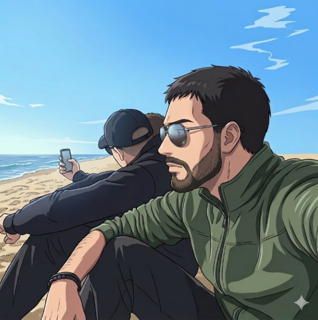
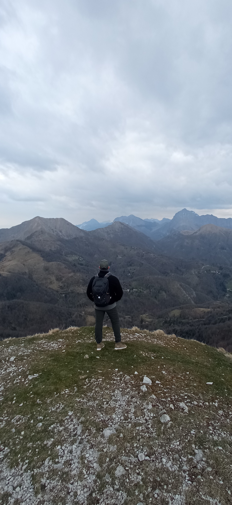

Sentieri, vette e natura: il mio diario di cammino
Mi definirei un esploratore di connessioni e di spazi. La mia vita è un equilibrio tra il silenzio dei sentieri durante il trekking e l'energia esplosiva della boxe: mi piace muovermi, scoprire cosa c'è dopo la prossima curva e superare i miei limiti. Sono una persona profondamente empatica e riflessiva, ma non senza una buona dose di ironia.
Qui sotto puoi trovare la lista dei miei trekking e cliccando sulla card puoi anche vedere le foto che ho selezionato, le più belle fatte durante l'escursione:
Caricamento sentieri...